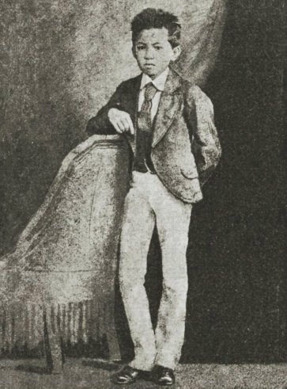

About Jose Rizal
José Protacio Rizal Mercado Alonso y Realonda was born on June 19, 1861 in the City of Calamba in Laguna, Philippines. Rizal was the seventh child out of his eleven siblings. His parents were Francisco Mercado Rizal and Teodora Alonzo y Quintos. At an early age, Rizal had a passion for learning and loved to write poetry.

José Rizal, to be known later as Dr. José Rizal, is considered the country of the Philippines greatest national hero. Rizal was officially named the country’s national hero by then American governor-general, William Howard Taft in 1901. He showed patriotism towards his country and was against the Spanish occupation of the Philippines in the 19th century. He worked for Philippine independence from the Spaniards all the way until his death in 1896.
Other than being a Filipino hero, reformist, and revolutionary, Rizal was an evident genius.